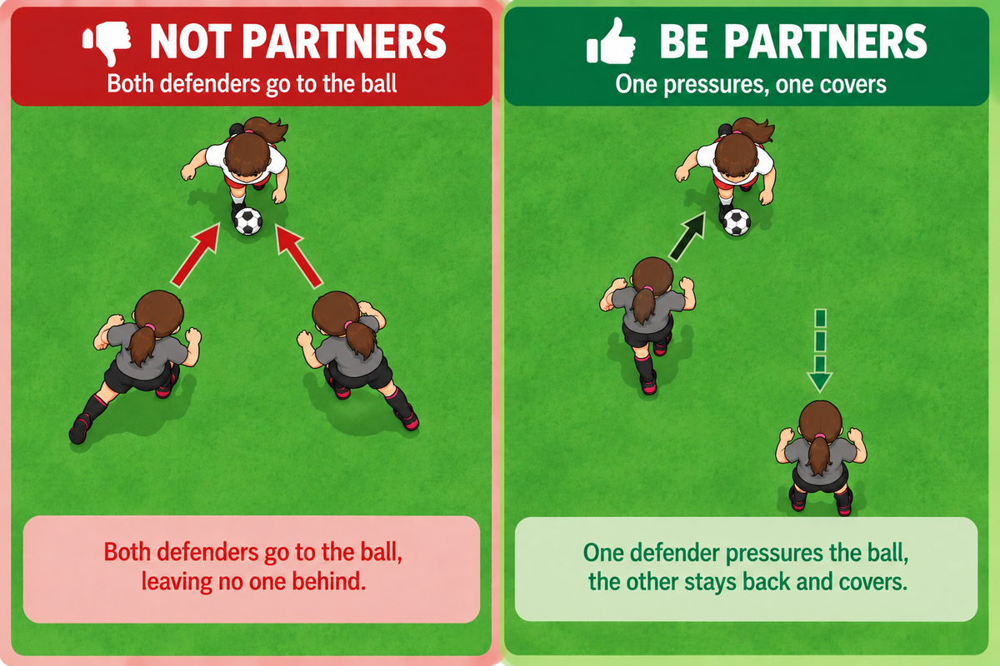
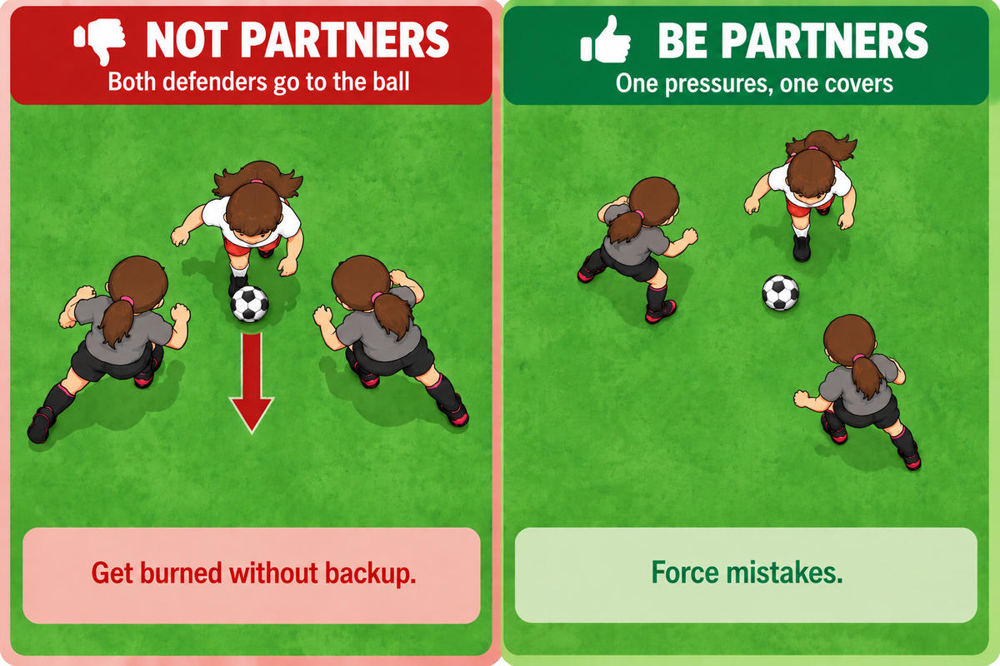

<title>Lesson 04 — Defense Partners</title>
<link rel="preconnect" href="https://fonts.googleapis.com">
<link rel="preconnect" href="https://fonts.gstatic.com" crossorigin>
<link rel="stylesheet" href="https://fonts.googleapis.com/css2?family=Archivo:wght@600;700;800&family=Asap:wght@400;500;600&family=IBM+Plex+Mono:wght@500;600;700&display=swap">
<meta name="viewport" content="width=device-width,initial-scale=1">
<link rel="stylesheet" href="../../assets/site.css">
<link rel="stylesheet" href="../../assets/document.css">
<link rel="stylesheet" href="../../assets/print.css">

<header><div class="wrap">
  <div class="topline"><p class="kicker">Lesson 04</p>
    <a class="back" href="../../">&larr; Back Home</a></div>
  <h1>Defense Partners</h1>
  <p class="meta"><span><b>Teaches</b> · two defenders, one job each &mdash; never both at the ball</span>
    <span><b>Needs first</b> · <a href="../03-one-on-one-defense/">lesson 03</a></span></p>

  <div class="callout">
    <p class="label">The big idea</p>
    <p class="lead"><span class="step">ONE PRESSURES</span> <span class="sep">&rarr;</span>
      <span class="step">ONE COVERS</span></p>
    <p class="aside">The closest defender goes. The other drops in behind them and waits.</p>
  </div>
</div></header>

<section id="partners"><div class="wrap">
  <div class="sechead"><h2>One Goes. One Backs Up.</h2></div>

  <figure class="photo-fig">
    
  </figure>
  <figure class="photo-fig" style="margin-top:12px">
    
  </figure>

  <div class="says" style="margin-top:22px">
    <div class="say big"><span class="title">Why both is worse than one</span>
      <span class="quote">&ldquo;It is easy to dribble <i>between</i> two people.&rdquo;</span>
      <p class="after">Two defenders side by side leave a gap in the middle, and once the attacker
      is through it they are both behind the ball and chasing. One dribble beat two players.</p></div>
    <div class="say big"><span class="title">Why one behind works</span>
      <span class="quote">&ldquo;It is very hard to dribble past a person <i>into</i> another person.&rdquo;</span>
      <p class="after">Beat the first defender and you arrive at the second one, still moving,
      still not looking up. That is where the mistake comes from &mdash; the covering defender does
      not have to do anything clever, just be there.</p></div>
    <div class="say"><span class="title">The covering defender</span>
      <span class="quote">&ldquo;Behind your partner, not beside them.&rdquo;</span>
      <p class="after">About <b>ten feet back</b>. Close enough to arrive, far enough to react.</p></div>
    <div class="say"><span class="title">When there are three of you</span>
      <span class="quote">&ldquo;Two pressure, one covers.&rdquo;</span>
      <p class="after">Same rule with one more body. The third stays about ten feet behind and
      <b>waits for the mistake</b> &mdash; they do not join in.</p></div>
  </div>
</div></section>

<section id="where"><div class="wrap">
  <div class="sechead"><h2>Where The Two Of You Stand</h2></div>
  <p class="lede-p">When the ball is not near you, this is home: inside the curve above the big
  box, one of you at each end of it.</p>

  <figure class="wide-fig"><svg viewBox="0 0 400 262" role="img" aria-label="The goal end of the field showing the goal, the small box, the big box and the curved arc above it. Two defenders stand inside the arc, one about a quarter of the way across and one about three quarters.">
    <rect x="8" y="44" width="384" height="188" fill="var(--grass)"/>
    <rect x="32" y="102" width="336" height="130" fill="none" stroke="var(--line)" stroke-width="2.5"/>
    <path d="M66 102 A 360 360 0 0 1 334 102" fill="none" stroke="var(--line)" stroke-width="2.5"/>

    <rect x="100" y="190" width="200" height="42" fill="none" stroke="var(--line)" stroke-width="2.5"/>
    <line x1="8" y1="232" x2="392" y2="232" stroke="var(--ink)" stroke-width="3"/>
    <rect x="144" y="232" width="112" height="20" fill="none" stroke="var(--ink)" stroke-width="5"/>

    <circle cx="133" cy="92" r="14" fill="var(--pitch)" stroke="var(--ink)" stroke-width="2.5"/>
    <text x="133" y="97" text-anchor="middle" font-family="Archivo,sans-serif"
          font-size="13" font-weight="700" fill="#fff">D</text>
    <circle cx="267" cy="92" r="14" fill="var(--pitch)" stroke="var(--ink)" stroke-width="2.5"/>
    <text x="267" y="97" text-anchor="middle" font-family="Archivo,sans-serif"
          font-size="13" font-weight="700" fill="#fff">D</text>
  </svg>
    <figcaption>One at each end of the curve.<span>Far enough apart to cover the width, close
    enough that one of you can always get behind the other.</span></figcaption>
  </figure>

  <figure class="wide-fig" style="margin-top:14px"><svg viewBox="0 0 400 262" role="img" aria-label="The same goal end. An attacker is up on the left, in front of the left defender, and an arrow shows that defender going out to meet them. The right defender has left their place on the arc, shown as a dashed circle, and dropped back into the middle in front of the goal.">
    <rect x="8" y="44" width="384" height="188" fill="var(--grass)"/>
    <rect x="32" y="102" width="336" height="130" fill="none" stroke="var(--line)" stroke-width="2.5"/>
    <path d="M66 102 A 360 360 0 0 1 334 102" fill="none" stroke="var(--line)" stroke-width="2.5"/>
    <rect x="100" y="190" width="200" height="42" fill="none" stroke="var(--line)" stroke-width="2.5"/>
    <line x1="8" y1="232" x2="392" y2="232" stroke="var(--ink)" stroke-width="3"/>
    <rect x="144" y="232" width="112" height="20" fill="none" stroke="var(--ink)" stroke-width="5"/>

    <defs>
      <marker id="go-d" viewBox="0 0 12 12" refX="8" refY="6" markerWidth="5" markerHeight="5" orient="auto-start-reverse">
        <path d="M1 1 L11 6 L1 11 z" fill="var(--ink)"/></marker>
      <marker id="drop-d" viewBox="0 0 12 12" refX="8" refY="6" markerWidth="5" markerHeight="5" orient="auto-start-reverse">
        <path d="M1 1 L11 6 L1 11 z" fill="var(--muted)"/></marker>
    </defs>

    <circle cx="267" cy="92" r="13" fill="none" stroke="var(--muted)" stroke-width="2"
            stroke-dasharray="4 4" opacity=".6"/>
    <path d="M259 103 C 243 124, 219 143, 209 152" fill="none" stroke="var(--muted)"
          stroke-width="2" stroke-dasharray="5 5" stroke-linecap="round" marker-end="url(#drop-d)"/>

    <circle cx="92" cy="52" r="13" fill="var(--cone)" stroke="var(--ink)" stroke-width="2.5"/>

    <path d="M122 81 L 105 64" fill="none" stroke="var(--ink)" stroke-width="2.8"
          stroke-linecap="round" marker-end="url(#go-d)"/>

    <circle cx="133" cy="92" r="13" fill="var(--pitch)" stroke="var(--ink)" stroke-width="2.5"/>
    <text x="133" y="97" text-anchor="middle" font-family="Archivo,sans-serif"
          font-size="13" font-weight="700" fill="#fff">D</text>

    <circle cx="200" cy="162" r="13" fill="var(--pitch)" stroke="var(--ink)" stroke-width="2.5"/>
    <text x="200" y="167" text-anchor="middle" font-family="Archivo,sans-serif"
          font-size="13" font-weight="700" fill="#fff">D</text>
  </svg>
    <figcaption>Now an attacker comes down one side.<span>The near defender goes out to meet it. The
    far one leaves the curve and drops into the middle, in front of the goal.</span></figcaption>
  </figure>

  <div class="says" style="margin-top:20px">
    <div class="say big"><span class="title">When the ball is away from you</span>
      <span class="quote">&ldquo;Guard the front of the big box.&rdquo;</span>
      <p class="after">That curve is where shots come from. Standing in it means you are already
      where the danger is, instead of running back to it.</p></div>
    <div class="say"><span class="title">When the ball comes</span>
      <span class="quote">&ldquo;Closest one goes.&rdquo;</span>
      <p class="after">The other slides in behind, ten feet back. You do not both move toward it
      and you do not both stay.</p></div>
  </div>
</div></section>

<section id="drills"><div class="wrap">
  <div class="sechead"><h2>Related Drills</h2></div>
  <p class="lede-p">Most obvious first.</p>
  <div class="todo" style="margin-top:14px">
    <b>2v1 in a box</b> &mdash; two defenders, one attacker, the same box and goals as
    <a href="../../drills/1v1-pressure-and-turn.html">1v1 Pressure and Turn</a>. Run in
    <a href="../../practices/practice-02.html">practice 2</a>, not written up as its own drill yet.
  </div>
  <div class="list" style="margin-top:10px">
    <a class="item" href="../../drills/1v1-pressure-and-turn.html">
      <span class="n">Drill</span>
      <span class="body"><span class="t">1v1 Pressure and Turn</span>
        <span class="d">The same box and goals with one defender. Run this first &mdash; the 2v1 is
        built on it.</span></span>
      <span class="tags"><span class="tag accent">intro</span><span class="tag">defense</span></span>
    </a>
  </div>
</div></section>

<footer><div class="wrap footline">Lesson 04 &middot; Defense Partners &middot; 10U<a class="back" href="../../">&larr; Back Home</a></div></footer>
